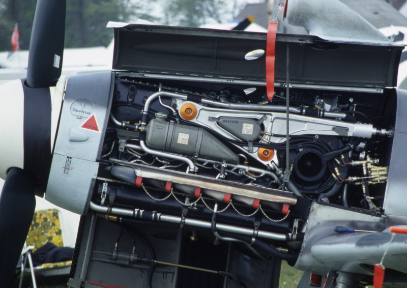

Le DB 605
L'étude du DB605 débute en 1941 et est une évolution du DB601 dont la cylindrée est portée à 35.7 litres.
Mécaniquement, le moteur dispose maintenant de 2 soupapes d'admission et 2 soupapes d'échappement et fonctionne à un régime moteur
plus élevé.
Le DB605 A
Produit au printemps 1942, il fournit une puissance de 1475cv au décollage.
Extérieurement, on peut le distinguer des DB 601 par la position des bougies qui a été revue afin de faciliter la maintenance.
Le bloc de démultiplication hélice, fabriqué par VDM, est lui aussi modifié, et dispose d'une réduction
de 1:685 afin d'optimiser le fonctionnement de l'hélice. Il fonctionne au carburant B4.
Le DB605 AS
Basé sur le DB605A, mais empruntant le compresseur du DB603, plus gros, est un moteur dont les performances sont améliorées pour les hautes altitudes. Le S signifie spécial. Il est aussi alimenté par du carburant B4, développe 1435cv et il est possible de lui adjoindre le booster GM-1.
Le DB605AM
D'abord dénommé DB605G, il est aussi dérivé du DB605A. Le M indique qu'il fonctionne avec le booster d'urgence MW (30 ou 50). Au départ, le MW était injecté par pression provenant de bouteilles d'air comprimés, ensuite cet air proviendra du compresseur directement. Fonctionnant avec du carburant C3, il développe 1800cv au décollage. Ce moteur voit l'introduction d'un radiateur d'huile plus gros.
Le DB605ASM
C'est un DB605 AS équipé du dispositif MW50. de base, c'est le carburant C3 qui est utilisé, le B4 sans MW50 étant interdit sous risque de destruction du moteur : En effet, plus l'indice d'octane est faible, plus le risque de détonation est élevé (voir utilisation MW50). Il dispose du même radiateur d'huile que le AM. Mis en service en juin 1944. Introduction du couvre culasse que l'on retrouvera sur le DB605D.
Les DB 605 ASB et ASC
Ce sont des modernisations des DB605 AS, ASM et AM. Apparus en 1945, ils sont assez proches au niveau performances du DB605 D. Contrairement à celui-ci ils utilisent le réservoir d'huile du DB605A mais gardent le gros radiateur adapté
aux hautes altitudes. La dernière lettre indique quel carburant le moteur utilise :
Le DB605 ASB utilise le B4 avec MW50 ou le C3 sans MW
Le DB605 ASC avec seulement le C3 et MW50
Ces 2 moteurs
sont "échangeables", par modifications des réglages d'admission du MW50
Vu la faible production de DB605D, ces moteurs seront utilisés en remplacement des DB605D lors de maintenances.
DB605A sur Bf109 G4
Le DB605 B
Les moteurs DB605 B, BS sont les pendants dans la version A, mais pour bimoteurs (rapport de réduction d'hélice différents).
Le DB605 D
L'autre version majeure du DB605 est le DB605D.
Il exista principalement en 2 versions, le DB et le DC, respectivement fonctionnant au B4 avec MW50 ou au C3 sans, développant une puissance de 1850cv, et l'autre fonctionnant uniquement
au C3 adjoint au MW50 d'une puissance de 2000cv au décollage. Comme les version AS, ils sont réversibles par modification des réglages du moteur.
Ils se caractérisent par un réservoir d'huile plus important
abandonnant la forme de fer à cheval, ainsi que le radiateur, identique aux ASB/C. On retrouve aussi le couvre culasse du DB 605ASM.
Sur le Bf109, des modifications de positions de trappes (réservoir d'huile, accès au système de
démarrage par temps froid) sont des signes identifiant à coups sur la présence d'un DB605D.
Utilisation
Le DB605 fut utiliser principalement par les chasseurs de l'axe, notamment le Bf109 (de G à K), le bf110, le Me210.
A l'étranger, il équipa le Saab J21, les chasseurs italiens de la série 5 (MC205,G55, Re2005). Il fut construit sous
licence par Fiat, donnant le Fiat R.A. 1050 Tifone, et par IAR.
Caractéristiques (DB605A):
Longueur : 2.303m
Largeur : 1.035m
Hauteur : 128m
Poids : 765Kg